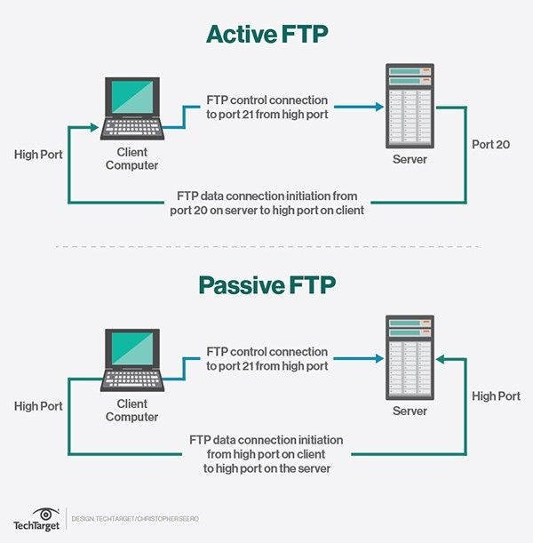

📁 FTP — Moving Files Across the Internet

FTP (File Transfer Protocol) is one of the oldest protocols on the internet. It was designed specifically for one job: moving files between computers. Before Google Drive, before Dropbox, before cloud storage — there was FTP.
✏️ My simple way to think about it: FTP is like a moving truck for files. You pack up your documents, images, or videos, and FTP delivers them to another computer. It's not fancy, but it gets the job done.
🔧 How FTP Works
FTP uses two separate channels:
- Port 21 (Command channel) — sends instructions (login, browse folders, get file list)
- Port 20 (Data channel) — actually transfers the file data
FTP Client ── Port 21 (commands) ──→ FTP Server
FTP Client ←── Port 20 (data) ──→ FTP Server
💻 Popular FTP Clients (the apps people use)
📁 FileZilla
📁 WinSCP
📁 Cyberduck
📁 Transmit
📁 Command-line FTP
📋 Common FTP Commands
USER — send your username to the serverPASS — send your passwordLIST — show files in the current directoryCD — change directory (move to a different folder)GET — download a file from the server to your computerPUT — upload a file from your computer to the serverQUIT — end the FTP session
🔒 FTP vs FTPS vs SFTP — Security Matters
- FTP (plain) — no encryption. Your username, password, and files are sent in plain text (anyone on the network could see them). ❌ Not secure.
- FTPS — FTP with SSL/TLS encryption (like HTTPS). ✅ More secure.
- SFTP — SSH File Transfer Protocol. Runs over SSH, very secure. ✅ Most secure.
💭 Honest opinion: FTP is old and not very secure by today's standards. Most people use cloud storage (Google Drive, Dropbox, OneDrive) now. But FTP is still used by web developers to upload files to hosting servers, and by organizations that need automated file transfers. It's simple and it works.
📋 Where I might still see FTP today
- Uploading website files to a hosting server
- Downloading large datasets from government or research sites
- Automated backups between company servers
- Legacy systems (older companies that never upgraded)
← Back to all terms